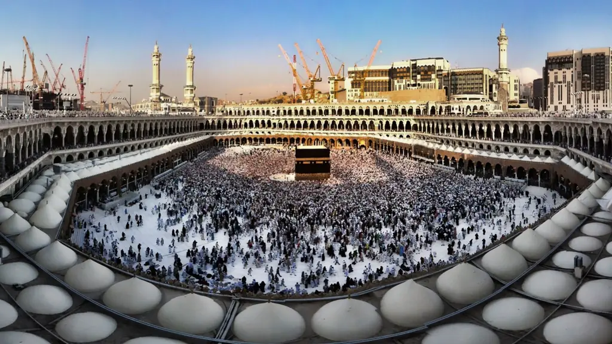
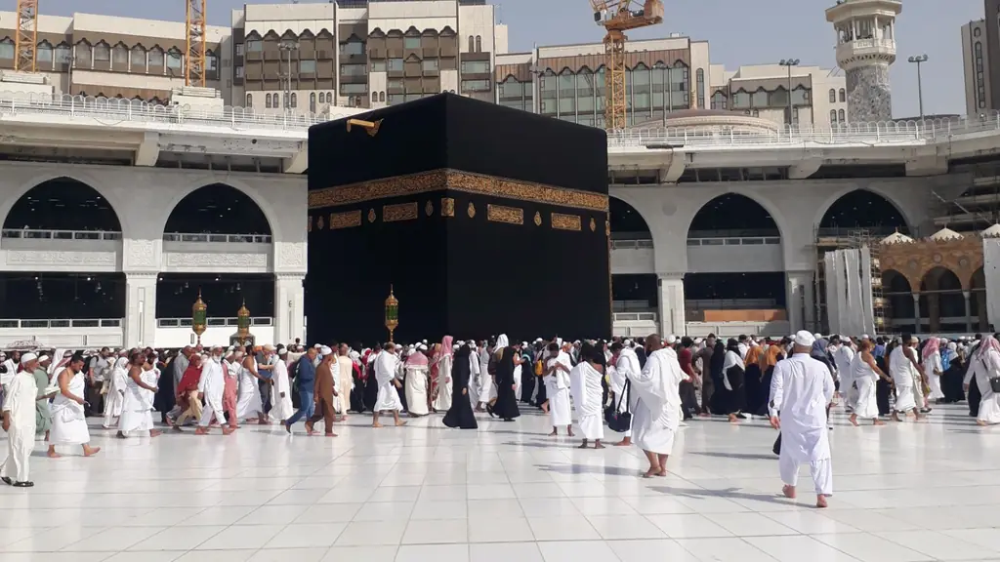

التأشيرة السياحية السعودية للمقيمين في تركيا: من يحق له وكيف يقدّم؟
دليل محدّث للمقيمين في تركيا: لماذا تحدد جنسيتك أهليتك للتأشيرة السياحية السعودية لا إقامتك، وما المسارات البديلة إن لم تكن مؤهلاً، وكيف تؤدي العمرة بها.
تسجيل اهتمام · رمضان 1448هـ
عمرة رمضان 2027 من تركيا تحتاج إلى تخطيط مبكر، خاصة لمن يريد العشر الأواخر قرب الحرم. سجّل اهتمامك الآن، ونرتب لك الطيران والفنادق في مكة المكرمة والمدينة المنورة وتجهيز ملف التأشيرة، بالتنسيق مع مزودي خدمات العمرة المعتمدين.
العمرة في رمضان من أكثر الرحلات طلباً في العالم الإسلامي، ويبلغ الطلب ذروته في العشر الأواخر، فترتفع أسعار الفنادق القريبة من المسجد الحرام وتقل الغرف المتاحة بسرعة. لذلك فتحنا هذه الصفحة لتسجيل الاهتمام مبكراً، حتى نبحث لك عن الطيران والفنادق قبل أن تضيق الخيارات. كما أن المقاعد على رحلات إسطنبول إلى جدة والمدينة المنورة تقل عادةً كلما اقترب الشهر.
يُتوقع أن يبدأ رمضان 1448هـ حوالي 8 أو 9 فبراير 2027، وأن تبدأ العشر الأواخر قرب نهاية فبراير أو مطلع مارس، وكل ذلك حسب رؤية الهلال. ويمكن أداء العمرة بـتأشيرة العمرة عبر منصة «نسك» أو وكلاء العمرة المعتمدين، أو بـالتأشيرة السياحية لمن تكون جنسيته مؤهلة لها، مع حجز تصريح العمرة في تطبيق «نسك» في الحالتين.
أويا للسياحة ليست وكيل عمرة مرخصاً. دورنا أن نحجز لك الطيران من إسطنبول، ونختار فنادق مكة والمدينة حسب ميزانيتك، ونجهز ملف التأشيرة، وننسق مع مزودي الخدمات المعتمدين في «نسك» حيث يلزم. أما إصدار التأشيرة والتصاريح فقراره للجهات السعودية المختصة، ونوضح لك من البداية ما نتولاه نحن وما يتولاه المزود المعتمد.
الحرمان الشريفان


الخيارات
رحلات من مطار إسطنبول أو صبيحة إلى جدة أو المدينة المنورة، مع اختيار مدينة الوصول والمغادرة حسب برنامجك.
خيارات بفئات مختلفة في مكة المكرمة حسب الميزانية والمسافة من الحرم، ونوضح لك الموقع الفعلي لكل فندق قبل التأكيد.
إقامة قرب المسجد النبوي قبل مكة أو بعدها، مع ترتيب التنقل بين المدينتين بقطار الحرمين أو بالسيارة حسب التوفر.
نراجع الجوازات والصور والمستندات، ونحدد المسار المناسب لكل مسافر: تأشيرة عمرة، أو تأشيرة سياحية لمن تنطبق عليه شروطها.
إصدار تأشيرة العمرة وباقة الخدمات المسجلة في «نسك» يتمان عبر المنصة أو وكلاء العمرة المعتمدين، ونحن ننسق معهم نيابة عنك حيث يلزم.
كيف تعمل
أرسل لنا عبر واتساب عدد المسافرين وجنسياتهم، والفترة التي تفضلها في رمضان، وفئة الفنادق.
نراجع جنسية كل مسافر ونوضح المسار الأنسب: تأشيرة عمرة عبر «نسك» أو مزود معتمد، أو تأشيرة سياحية لمن يحق له.
الطيران والفنادق والتنقل، مع الأسعار المتاحة وقت الطلب وشروط الدفع والإلغاء.
تجهيز الملف في التوقيت الصحيح، والتنسيق مع المزود المعتمد، وإرشادك لحجز التصاريح في «نسك».
قائمة التحضير
تسجيل اهتمام
املأ النموذج وسيفتح واتساب برسالة جاهزة، ويصلك عرض مكتوب قبل أي دفع.
أسئلة وأجوبة
يُتوقع أن يبدأ رمضان 1448هـ حوالي 8 أو 9 فبراير 2027، وأن يكون عيد الفطر حوالي 9 أو 10 مارس 2027. والتواريخ النهائية تُحدد برؤية الهلال.
نعم لحاملي جنسيات الدول المؤهلة للتأشيرة السياحية، ومنها تركيا، خارج موسم الحج، بشرط حجز تصريح العمرة في تطبيق «نسك». وأهلية التأشيرة تتبع جنسية الجواز وليس الإقامة، فنتحقق من حالتك قبل أي حجز.
لا، نحن وكالة سفر في إسطنبول ولسنا وكيل عمرة مرخصاً. نرتب الطيران والفنادق وتجهيز ملف التأشيرة، وننسق مع مزودي خدمات العمرة المعتمدين في «نسك» حيث يتطلب الأمر ذلك.
كلما كان أبكر كان أفضل، لأن الطلب على الفنادق القريبة من الحرم في العشر الأواخر كبير. ننصح بتسجيل اهتمامك الآن وتأكيد الفندق في أقرب وقت تسمح به ميزانيتك ومواعيدك.
نعم، أداء العمرة يتطلب تصريحاً يُحجز في تطبيق «نسك» أياً كان نوع التأشيرة، وكذلك زيارة الروضة الشريفة في المسجد النبوي. نرشدك لحجزهما حسب المواعيد المتاحة.
غالباً يحتاجون إلى تأشيرة العمرة المخصصة عبر «نسك» أو وكيل معتمد، لأن الإقامة التركية وحدها لا تجعلهم مؤهلين للتأشيرة السياحية. ومن يحمل تأشيرة أمريكية أو بريطانية أو شنغن مستخدمة قد يكون مؤهلاً لها وفق الشروط المعلنة، وقواعد الإصدار لبعض الجنسيات قد تختلف، فنتحقق منها قبل أي دفع.
من دليل أويا
دليل محدّث للمقيمين في تركيا: لماذا تحدد جنسيتك أهليتك للتأشيرة السياحية السعودية لا إقامتك، وما المسارات البديلة إن لم تكن مؤهلاً، وكيف تؤدي العمرة بها.

كل ما يحتاجه المواطن التركي والعربي المقيم في تركيا لتقديم ملف شنغن قوي: أين تقدّم، وما الأوراق، وما الأخطاء التي تؤدي إلى الرفض.
خدمة شخصية من البداية للنهاية
أخبرنا بوجهتك وتواريخك وعدد المسافرين، ويصلك عرض مفصّل خلال وقت قصير — بدون أي التزام.